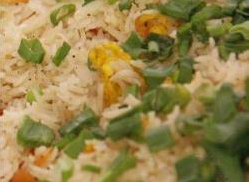

HTML Version
Chinese Rice with Sauce

Ingredients
- Boiled rice500gm
- Salt to taste
- Cabbage 1 cup
- Capsicum 1
- Carrot 1
- Green onions 1
- Oil 2 tbsp
- Onion 1
- Chopped garlic 1-2 cloves
- Beaten egg 1
- sauce 2 tbsp
- Sugar 2 tbsp
Sauce Ingredients
- Fried onion 1
- Salt to taste
- Tomato ketchup 1 -2 cup
- Soya Sauce 2 tbsp
- Black pepper 1 tsp
- White pepper 1 tsp
- Corn flour 2 tbsp
Directions
Fried Rice
- Boil rice with 1 tbsp salt.
- Cut all veges like cabbage, capsicum, carrot, green onion and normal onion>
- Heat oil in a pan, add chopped garlic, saute it, then add whisked egg in it and break egg it into small pieces,
- then add all veges, after 2-3 minutes add boiled rice.
- Now add salt, soy sauce and sugar; toss gently so everything mix. Simmer on slow heat for 8-10 minutes.
- Top with green onion and serve with sauce.